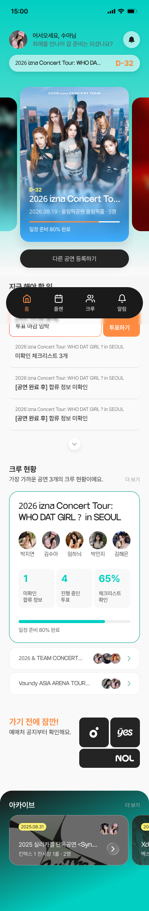
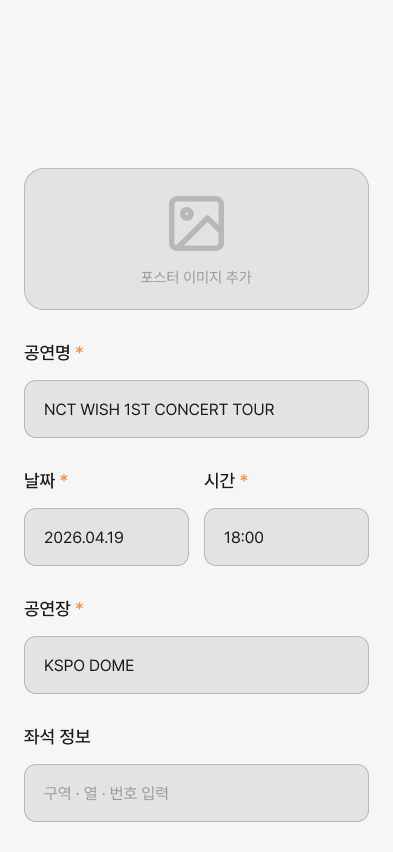
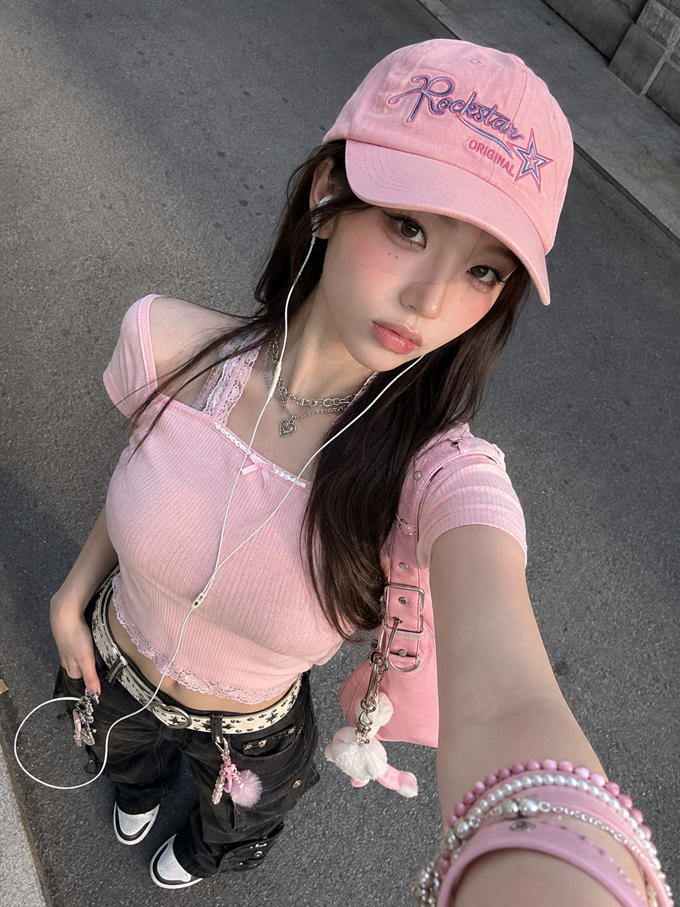
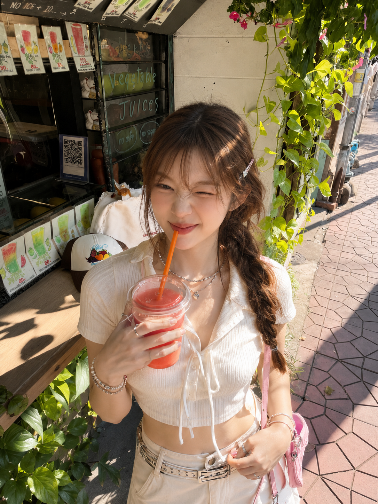

여기저기 흩어진 정보
숙소, 맛집, 교통편을 찾으려고 여러 앱을 오가야 해요.
YOUR CONCERT TRIP, TOGETHER
공연장 주변 장소부터 일정 관리, 동행인과의 약속까지.
복잡한 콘서트 원정 준비를 한곳에서 관리하는 플래너, STAG.
우리의 다음 공연, 함께 준비해요.


WHY STAG?
교통편은 지도 앱에서, 일정은 메모장에, 친구들과의 약속은 채팅방에.
여기저기 흩어진 준비 정보, 이제 한곳에 모아보세요.
숙소, 맛집, 교통편을 찾으려고 여러 앱을 오가야 해요.
어디서 만나고 무엇을 먹을지, 친구들의 의견을 모으는 것도 일이에요.
준비물부터 집합 시간까지, 공연 당일에는 챙길 것이 더 많아져요.
ONE CONCERT, ONE PLACE
공연 정보를 등록하고, 친구들과 계획을 공유하고,
공연 당일까지 필요한 일정을 확인해 보세요.
등록한 공연을 중심으로 준비 정보를 확인해요.
크루를 초대하고 의견과 합류 정보를 공유해요.
공연 시간을 기준으로 원정의 하루를 정리해요.
GET READY WITH STAG
우리의 원정에 필요한 것들을 차근차근 만나보세요.
UX INSIGHT / N=18
18명을 대상으로 공연·여행 등 단체 일정의 준비 방식과 협업 경험, 당일 문제를 살펴봤습니다. 조사 대상은 20대 9명, 30대 9명이며 최근 1년간 공연 경험자는 7명, 여행 경험자는 15명입니다.
공연별 정보와 주변 장소, 일정 정보를 한 기준점으로 묶어 확인할 필요가 있었습니다.
채팅 속 의견을 다시 취합하는 상황을 줄이고, 결정 상태가 보이도록 설계해야 했습니다.
합류 정보, 체크리스트, 알림과 일정 확인이 당일 행동 판단으로 이어져야 했습니다.
FEATURE PREFERENCE
N=18, 복수 선택 문항입니다. 각 항목의 합계는 100%를 초과할 수 있습니다.


EXPLORE STAG
공연 등록부터 크루와의 협업, 일정 관리까지.
Figma 디자인에서 STAG의 주요 화면을 살펴보세요.
Figma 디자인 파일로 이동합니다.
SEE YOU AT THE STAGE
공연을 기다리는 순간부터 함께 돌아오는 길까지.
STAG와 함께 더 편리한 콘서트 원정을 준비해 보세요.